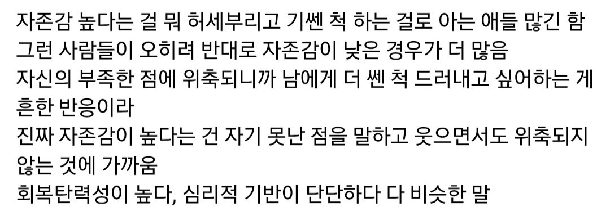

난 그래서 요새 메타인지 잘 하는 사람이 진짜 좋더라. 나의 부족함을 알고 그 것을 인정할 줄 아는 사람들. 이걸 갖고 자신감 타령하는 애들이 있는데 이런건 자기객관화에 충실한 사람들인 것 같음.
메타인지가 안 되는 애들은 위처럼 근거없는 허세를 부리거나 자기의 단점이나 실수를 덮기 위해 타인을 공격함.
스스로 단점이나 실수를 되돌아 볼 용기가 없으니까 타인을 깎아내림으로써 자존감을 회복하거나 정당성을 확보하려는 경향이 있음
그럼에도 불구하고 나는 이런 좋은 점이 있어...
허허
실제로 좋은 점이 없으니까 문제지
문제제기는 좋으나 현실적용 상담이 꽝
원피스 최근화에 패왕색 패기가 무엇인지에 대한 설명이 있던데 그거 보고 자존감이라고 느꼇음
특히나 더 패왕색 보유자들 보면 ㅇㅇ
그리고 그런면에서 위 글에서 말하는 그럼에도 장점이 있다는 생각을 하라는건 틀린 접근인거 같음
패왕색 보유자들은 걍 남들과 비교 자체를 안함
남들과의 비교로 내가 대단해질 이유조차 없음
이게 자존감의 시작이 아닐까 한다
아무리 본인이 처한 현실이 씹창이어도 자기객관화하고 메타인지 잘 되면 그게 자존감 좋은거라고 봄
현실이 객관적으로 씹창이면 자기객관화하고 메타인지 잘 되면 씹창인거 아닌가
그런가
난 못났고 못된 사람이야. 근데 잘나고 좋은 사람이 되고 싶어서 노력하고 있어.
못난 건 태생이라 과거 역사이고 흉터처럼 노력으로 없앨 수 있는게 아님. 가릴 순 있겠지만 결국 드러나지.
그렇다고 가만히 있을 순 없잖아
못생긴 사람들은 마음이 이뻐 ㅋㅋㅋㅋㅋㅋㅋㅋㅋㅋㅋ
마음이 이쁜 개붕이 추
저는 찌찌를 좋아해요
근데 결과적으로 "나는 잘났어" "나는 최고야"가 필요하긴 함 ㅇㅇ. 못난 부분을 인정하고 그 뒤에 좋은 점을 찾으라는데 결국 그것도 객관적으로 보면 못났기 때문에 이정도면 최고라는 마음가짐이 필요함.
그게 쉽지가 않지 그래서 힘들고 ㅋㅋㅋ
그래서 나더러 어쩌라고 마인드로 살아라
아니 진짜 없다구요
일단 자기객관화가 돼야함
니체가 말하는거군
그럼 그런건 자신감 부족이라고 해야되나?
그래서 개드립에 키작남 게시글마다 나타나는 그 개붕이가 불쌍해보임
본인 상황이 그런데 인정하고 다른 장점을 만들려고 해보는게 아니라 남탓, 세상탓만 하고 있으니
비유를 박재범으로 해서 그렇지 곽튜브로 바꿔보면 걔 정신병 걸린다